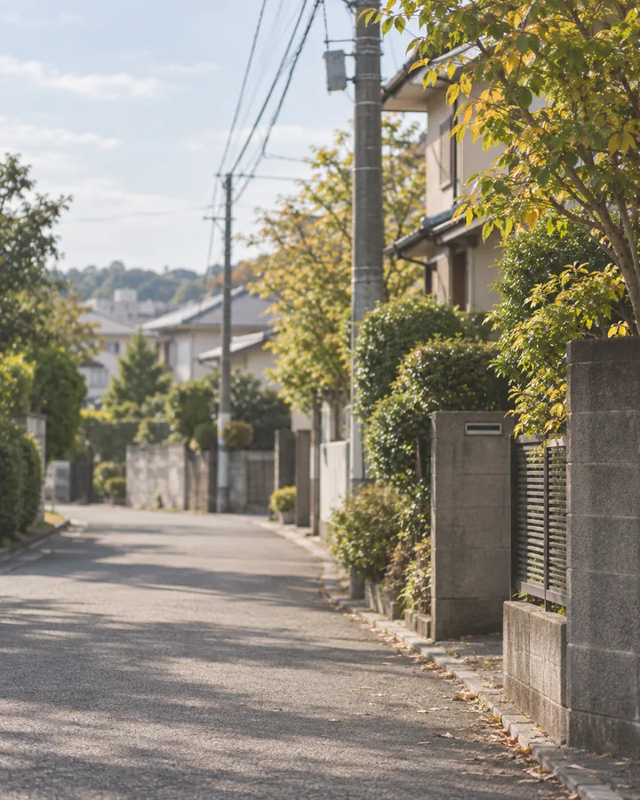
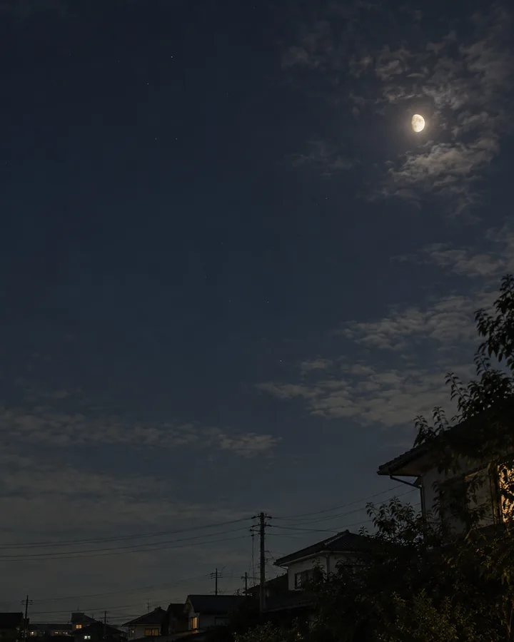
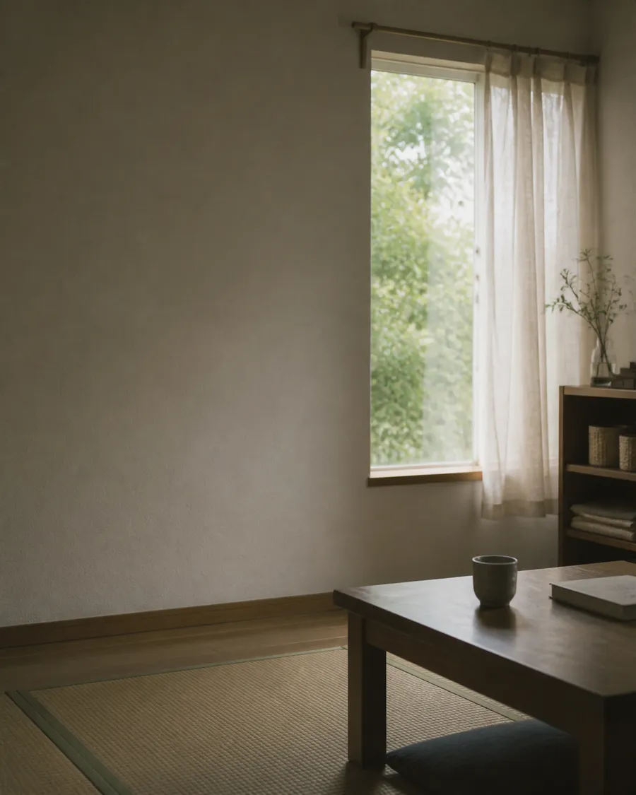
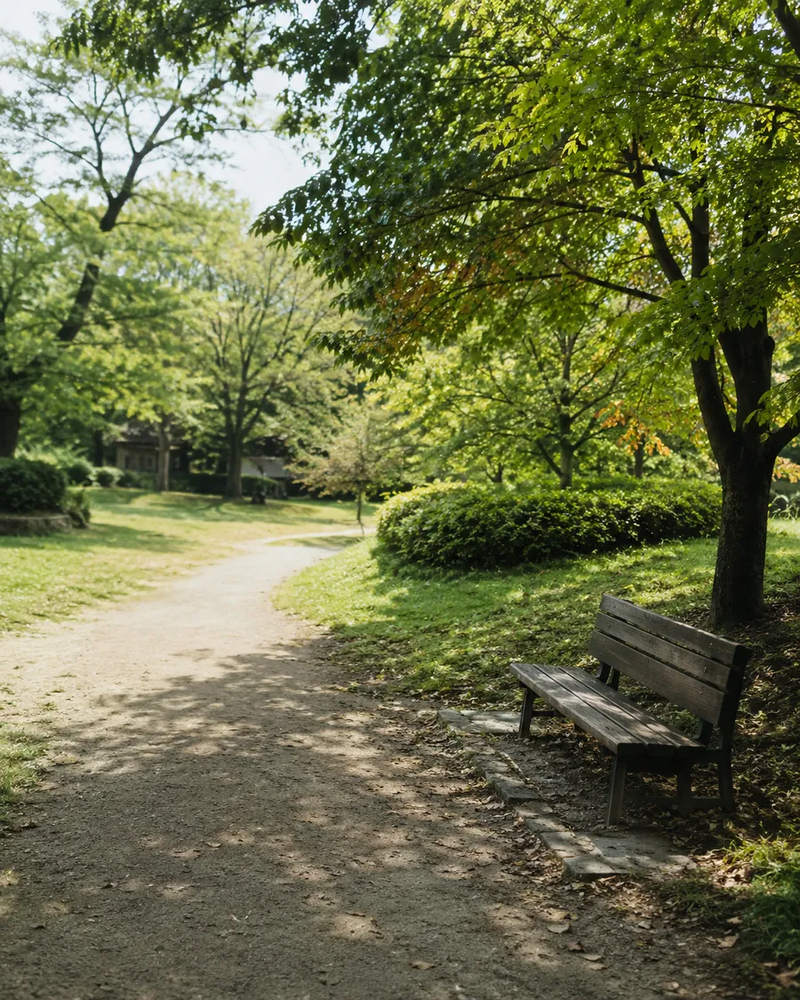
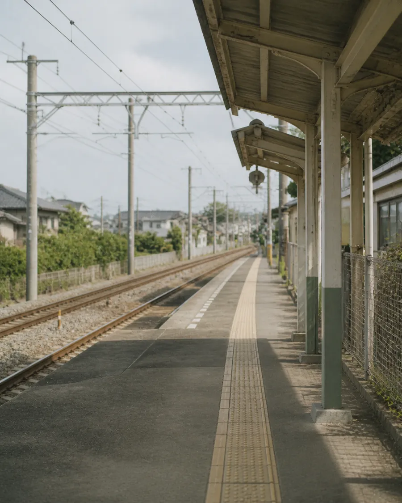
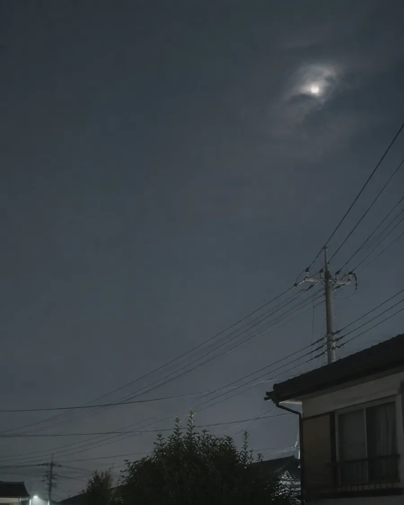
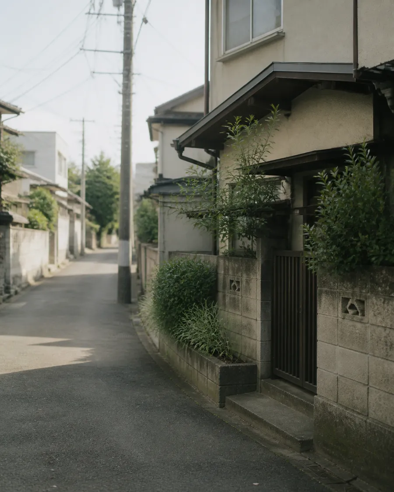

うたがえし
ゆ
これまでの景色
ひらいた日が、ここに並びます。
10月
5の景色

今日
・6の言葉
金木犀のにおい 駅までの道で ふいに足がとまる
›
10月7日
・5の言葉
窓をしめる音が 部屋のどこかで ひとつ増えた
›

10月5日
・7の言葉
月がやけに白い 上着を取りに 一度だけ戻る
›
10月3日
・4の言葉
ベンチの上に どんぐりがひとつ 誰も座らない
›
10月1日
・5の言葉
乗り換えのホーム 上着の人が 少しだけ増えた
›
9月
6の景色
›
9月28日
・6の言葉
帰る時間なのに まだ明るくて 少し遠回りした
›

9月26日
・3の言葉
畳んだ半袖を 引き出しの奥へ まだ迷いながら
›

9月21日
・5の言葉
木かげのベンチが ぬるくなっている 座ってしまう
›

9月17日
・4の言葉
窓の日ざしが 席のはしにだけ 残っている
›

9月12日
・6の言葉
ゴミを出しに出て 空を見てから 部屋へ戻った
›

9月5日
・2の言葉
日なたを避けて 道の左ばかり 歩いてしまう
›
ホーム
これまで
返し帳
プロフィール
アカウント設定
言葉を整える・削除する
はじめての方へ
ログアウト